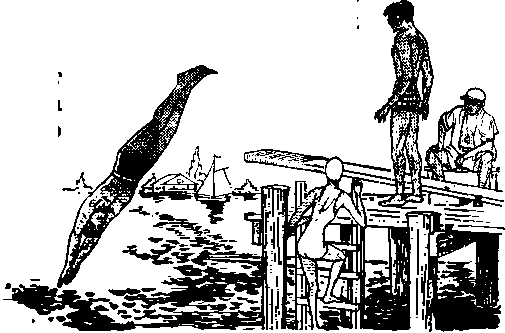

Ammon Sense May Save Your Life
PAGE a
Aazil, Land of Opportunities
PAGE 12
ile’s Long Quake
PAGE IS
JULY 22. 1960
THE MISSION OF THIS JOURNAL
News sources that are able to keep you awake to the vital Hsuet of &n times must be unfettered by censorship and rtffish interests. Awa kef” has no fetters, ft recognizes facts, faces facts, is free to publish f&cts, It Is not bound by political ambitions or obligations; it is unhampered by advertisers whose toes must not be trodden an; it is unprejudiced by traditional creeds. This journal keeps itself free that it may speak free/y to you. Bpi it dans not abuse its freedom, it maintains integrity to truth.
'’Awake)” uses the regular news channels, but Is not dependent on them. fts own correspondents are an ail continents, in scores of nations, from (fie four earners at the earth their unpensored, On~the-scene$ reports come to you through these columns. This journal’s viewpoint is not narrow, but h infernertiarrtri. If is reod in many nations, in many languages, by persons of all ages. Through its pages many fields of knowledge paw in reviewSwenWeM, commerce, religion, history, geography, science, social conditions, natural wonders—why, its coverage is os broad as the earth and os high as the heavens.
” Awake I" pledges itself to righteous principles, to exposing hidden foes and subtle dangers, to championing freedom for all, to comforting mourners and strengthening those disheartened by the failures of a delinquent world, reflecting sure hope for the establishment of a righteous New World.
Get acquainted with 1 ‘Awake 1" Keep awake by reading ‘’Awakel"
P\3BLjREtSi> 5rartT.L:T‘4XrP0lfaLY IT? 11W UnTSSB UY the
WATCHTOWER BIBLE and TRACT SOCIETY of YOHK, INC. 117 A.d?m\s Street Bf^aklyn 1, Nfw York, U.S.A.
and IN ENQtANp Dr WATCH TOWER BIBLE AND TRACT SOCIETY
Watch Tower Ha’ise, The Ridgeway N* H. Kn^, Fwjsrfee?!#
Printitrfl this isfiue^
''Anat* J" k to tel tori 21 Itfwwr
-Afrlkftafla, DaM, TWL tai«[b.ft» flmi-tsii, Ftwh, Ctfinaan, Greek, Jtaws-
gish, ?s>d.w^, finish, Swedish, TagriuRr ZiM 1 outfit?—Kerman, T’niisti, UHiAhj-fcz?.
Yearly subactiptira rate for srnjlWntMj edjthw Amwica, (fsS-> It7 AdantB ftortto L KX
U Beresford Rd., fclfHMteM, N.S.W. &/-1A0 ariiigijfirid Ave., Toronto 19, Uot. |l Wsh lower House,
Tte ► Unufaft A'. K 7 7/*
fifrw iMhinft New &\j«k Hit. xueWaorf, 5.^. J ”<■>
AfrleAr Private Ba?, Ela^cfeluiWetji, Tvl. 7/'
London N.w. 7t England Grant Sumftt Recret&ry
• 4d ft «py /AustrftUa^ M)
for fi±ac*ip!Jt®.$ siwaki he sfistt fa (he afire to tour ncmnltf. Otherwlw ?®w TEUjlittow (A bwk&A. Itatic* rf expfrttfojr & M Wf ImapA before tdPberVPtMA
IHA.HGU 4F ADDRESS Md r*ach i; Thirty iftfe tew» >oir {Rarity) tw ofd rff# wir
pnW. foot ritf ftrttow hHJ), WiUft
Toftar, Vftrtirti Tfswtr Huu. Td« EHduway, fr.w. 7r iiWMri,
Inttirefl a? At frwfcjw, N.T<
PrffltAt iff
Tit 6 ft fa rert In '‘MatAi." u tU New ftrftf Twjhlbn pl the Hn4 SrTt>tw«.
irbett ettor tarfftethm An ffie faj’Aar^ xrefrefr r/// appear fcffiW th*
.4.6' - AJftewrs® Standard V^inu -Dlt- Catholic TersSun Mo- Jws Mo^atr'e fenstoa .dT1- Arj Amo EfrtrqiJfk 1 J?4iou fiZJ- T&»? KtJttJMiJr .iJiLxvicii Jfto — X. B, nrra^E?
AT- Autljorized VeisM <K1I) JI1 - Jewish IhibllcaUOh ttoe. iUatvkid Vvtifari
Zi!> - J. Ms D«rir/« reri&D Lfi - latic J^eser'« version ig - flcWl Yow^’t vtntnu
CONTENTS
Finding Peace in This Troubled World
Common Sense May Save Your Life
Results from Appeal for Freedom
Lack of Love in Religious Boom
J'Your Word Es Truth"
"You, Therefore, Must Be Perfect"
DO YOU remember the last time you accidentally cut yourself? No doubt your immediate con-cem was to administer the neces- J sary first aid. Or perhaps, while you were hammering, a misdirected blow caught your finger instead of the nail. Probably you gave tender care to the damaged member.
However, would it be sensible for someone who cuts himself to take the knife and jab it into the wound again and again? Would you think it wise of the one bruised while hammering to pound the rest of his fingers to a pulp? That would be ridiculous. The hurt already inflicted is bad enough. The need is for remedial measures, first aid, a soothing ointment, not further damage.
Y£t, the inflicting of further damage is what one frequently does who becomes easily offended. To take offense is to be displeased, pained, annoyed, wounded, or hurt by the actions of others, whether the offense is real or imagined. Taking offense quickly indicates a lack of control over one’s mental disposition, causing him to yield to selfish acts that can cause damage far more serious and extensive than the hurt of the moment. It may impel one to give way to outbursts of speech and action that can disrupt family life and friendship alike, bringing years of regret and heartache. “It is a foolish person that makes known his vexation in the same day, but the shrewd one is covering over a dishonor. * ’—Prov. 12:16.
Some learn to control this anger, but indulge in another hurtful practice when offended. This is the harboring of grievances or bearing a grudge against the one offending. When unchecked, this resentment can build up into hatred and blind the mind to its consequences. In time it can manifest itself in hurtful gossip, vindictive action, possibly even violence or murder.
Cain was offended when Abel found favor in the eyes of God. Instead of accepting this as a rebuke and correcting his form of worship, Cain became unforgiving, nursed the grievance, built up strong hatred and finally exploded into vengeful action by murdering his brother Abel.—Gen. 4:3-8.
Note, too, the consequences to Haman, high official of ancient Persia. Esther 3:5 tells us: “Now Haman kept seeing that Mordecai was not bowing low and prostrating himself to him, and Haman became filled with rage.” Even though he had riches and had been exalted over the princes of the Persian Empire, his mind was tormented over being offended by Mordecai. While not resorting to an outward act of violence at the moment, he dwelt on the offense and determined to kill Mordecai by exterminating his race in Persia. Not only did this bring him unhappiness, but later he was hanged on the gallows prepared for his offender. By being unforgiving, irreconcilable, the one he injured was himself. “And they proceeded to hang Haman on the stake that he had prepared for Mordecai, and the king's rage itself subsided.”—Esther 7:10.
In addition, taking offense easily and brooding over grievances brings on anxiety that can be harmful to automatic body functions, especially digestion. It can lead to emotional disturbances, which upset internal balances and even produce ulcers. Wonder drugs are helpless against these ills. One’s vital force is consumed by unproductive fretting, health is undermined and life made miserable.
What can be done to avoid taking unnecessary offense? Understanding some of the causes will help. One is pride, the thinking more of ourselves than we ought to. The proud seek to elevate themselves over their fellow man, as did Haman, and resent any action they feel will degrade them in the eyes of others. As a result, they become overly sensitive to criticism and lay themselves open to becoming offended easily. “Pride is before a crash, and a haughty spirit before stumbling.”—Prov. 16:18.
Humility must be cultivated instead of pride; we should see ourselves in true relationship before our Creator and our fellow man. This requires accurate knowledge of God and his purposes. Accurate knowledge reveals that Jehovah is the exalted one and that all are born in sin, imperfection, and therefore tend toward making mistakes. In view of this, we learn not to demand of others what we ourselves cannot produce—perfection. This will help us to appreciate that we all can unintentionally offend others and that many offenses are not planned, but are due to the tendency of error common to fallen flesh.—Ps. 51: 5; Rom. 5:12.
Knowledge of these limitations will aid us in becoming more generous and understanding toward others and puts us on the way to cultivating the quality of love. Love • is unselfish, forgiving and merciful. “It does not keep account of the injury.” It acts as a healing balm when wounds are suffered. It is to personal relationships what medication is to cuts and bruises. It soothes, covers over, minimizes damage and restores. As a bandage covers over a cut, so love will cover over the offenses of others, keeping them small and insignificant when compared to the far more important matter of doing God’s will. “Love covers ovei’ even all transgressions.” —1 Cor. 13:5; Prov. 10:12.
But what if we feel that an offense is committed deliberately and a serious wrong has been done? Jesus outlined the action to take at Matthew 18:15-17. But before doing this it would be wise to examine ourselves and keep in mind our own inclination toward wrongdoing. Perhaps something we said or did provoked the offender, though we may not have "been aware of it. Love will give the other the benefit of the doubt. It will cause us to be “freely forgiving one another just as God also by Christ freely forgave” us. (Eph. 4:32) How sound the course of practical wisdom suggested at Ecclesiastes 7:8, 9: “Better is one who is patient than one who is haughty in spirit. Do not hurry yourself in your spirit to become offended, for the taking of offense is what rests in the bosom of the stupid ones.”
10, 12) The materialistic existence that many persons have adopted has not brought them peace in this troubled world but has only added to their anxiety.
Others have gone after pleasure, but their restless search for peace via pleasure has only left them mentally and physically exhausted. Still no peace of mind! So some have tried to find peace by means of alcohol and tranquilizers; when their effects have worn off, the individual’s lack of peace only becomes more obvious and more disturbing.
Not surprising that a peace-of-mind religion has developed. This is religiosity in which the main objective is peace of mind. As Will Herberg says in Protestant—Catholic—Jew: “In the last analysis, it is 'peace of
TRUE peace Includes peace of mind. But such peace has been shattered in a world filled with worry, anxiety and fear. These peace destroyers spring from many underlying causes: the cold war in the nuclear-missile age, radiation or Strontium-90 dangers, financial problems, inflation, crime, disease and death. With true peace so elusive in this modern world, many persons have deliberately set their minds to find peace. The results have not been happy.
What is wrong? Men have turned to the wrong source' for the peace that they crave. Some have thought that money would assuage the anxiety in their lives, but money has failed them, just as the Bible says: “A mere lover of silver will not be satisfied with silver, neither any lover of wealth with income. This too is vanity. Sweet is the sleep of the one serving, regardless of whether it is little or much that he eats; but the plenty belonging to the rich one is not permitting him to sleep.” (Eccl. 5: mind’ that most Americans expect of religion. 'Peace of mind’ is today easily the most popular gospel that goes under the name of religion; in one way or another it invades and permeates all other forms of contemporary religiosity. . . . What is desired, and what is promised, is the conquest of insecurity and anxiety, the overcoming of inner conflict, the shedding of guilt and fear, the translation of the self to the painless paradise of ‘normality’ and ‘adjustment’! Religion, in short, is a spiritual anodyne designed to allay the pains and vexations of existence.”
True religion can and does bring peace of mind in this troubled world, but the peace-of-mind religiosity is not true religion. Why? Because it puts the desire of the individual above the will of God. There is nothing wrong with the desire for peace, but the one who would truly find it must recognize that peace is part of “the fruitage of the spirit” of God. (Gal. 5:22) God’s spirit is necessary if one is to have peace.
God gives his spirit to those who are doing his will, who are obeying his divine commandments. Declares the psalmist: “Abundant peace belongs to those loving your law.” Ah, this is the crux of the matter—getting the divine commandments in our heart, living by these laws so that one can always maintain a good conscience toward God.—Ps. 119:165.
Accurate Knowledge of God Needed
So if anyone is going to find peace in this troubled world, he must take in accurate knowledge of the divine will, as the apostle Paul shows: “Be filled with the accurate knowledge of his will in all wisdom and spiritual discernment, in order to walk worthily of Jehovah to the end of fully pleasing him as you go on bearing fruit in every good work and increasing in the accurate knowledge of God.” (Col. 1: 9, 101 This taking in of accurate knowledge is not simply a psychological device to reduce tensions in life but rather is for the purpose of being guided by the divine will in all of life’s activities. So more than accurate knowledge is needed: one must act upon this accurate knowledge of God. This gives us peace, a good conscience toward God.
No wonder the seekers of peace of mind have failed! They have not taken in the accurate knowledge of God, coming to know the divine will as to man’s duties and obligations, then acting upon this knowledge. They have not heeded the counsel at Romans 12:2: “Quit being fashioned after this system of things, but be transformed by making your mind over, that you may prove to yourselves the good and acceptable and complete will of God." To have peace in this troubled world, then, one must think right. He must think the way God wants us to think. Concerning this the apostle Paul writes:
“Finally, brothers, whatever things are true, whatever things are of serious concern, whatever things are righteous, whatever things are chaste, whatever things are lovable, whatever things are well spoken of, whatever virtue there is and whatever praiseworthy thing there is, continue considering these things. The things which you learned as well as accepted and heard and saw in connection with me, practice these; and the God of peace will be with you."—Phil. 4:8,9.
Yes, “practice these” things that God tells us to do; only then will “the God of peace” be with you.
Prayer and Trust in Jehovah
Prayer is a divine provision for the “God of peace” to be with us. By means of prayer we can appeal to Jehovah God, the great Rock, and cast our reasons for anxiety upon him. God’s Word says: “Throw your burden upon Jehovah himself, and he himself will sustain you.” (Ps. 55:22) It would indeed be difficult to have mental peace without this provision of prayer by which we can throw our burden of anxiety upon Jehovah himself. The Christian must be humble enough, then, to realize that he cannot himself carry his burden and direct his steps. Says God's prophet: “I well know, O Jehovah, that to earthling man his way does not belong. It does not belong to man who is walking even to direct bls step.”—Jer. 10:23.
If we have relied on Jehovah God for wisdom and guidance, we need not worry about the outcome; and we can have peace of mind. “Do not be anxious over anything,” says Christ’s apostle, “but in everything by prayer and supplication along with thanksgiving let your petitions be made known to God, and the peace of God that excels all thought will guard your hearts and your mental powers by means of Christ Jesus,” (Phil. 4:6, 7) In a world as troubled as this, only the “peace of God,” the peace God gives, can prevent us from suffering the fears and anxieties that were certain to befall mankind in these “last days,” as Jesus Christ himself foretold: “On the earth anguish of nations, not knowing the way out because of the roaring of the sea and its agitation, while men become faint out of fear and expectation of the things coming upon the inhabited earth.” (Luke 21:25, 26) We will not be among those persons who “become faint out of fear and expectation of the things coming” upon this nuclear-missile age if we take in accurate knowledge, act upon it, think in harmony with it, throw our burden upon Jehovah and pray for divine guidance and wisdom.
Aiding Others to Find Peace
Something more is yet required for true peace in this troubled world: unselfish giving. This is the divine will, as stated at Acts 20:35: “You must assist those who are weak and must bear in mind the words of the Lord Jesus, when he himself said, ‘There is more happiness in giving than there is in receiving.’ ” What can you freely give that will make others as well as yourself truly happy? Why, the peace that you yourself enjoy! Share it with others. Do as Ephesians 6:15 counsels and have your “feet shod with the equipment of the good news of peace.” This means going to others to give them the “peace of God” that comes from taking in accurate knowledge of God and of his kingdom.
Yes, give others the knowledge that God’s kingdom is established in the heavens, that soon the kingdom will bring peace to the earth by destroying this wicked system of things, as Daniel foretold: “The God of the heavens shall set up a kingdom which shall never be destroyed, nor shall the kingdom be left to another people; it shall break in pieces and annihilate all these kingdoms, but it shall stand forever.” (Dan. 2:44, AT) Teach others the significance of the Lord’s prayer: “Let your kingdom come. Let your will come to pass, as in heaven, also upon earth.” Help others realize that peace will soon come to this earth permanently by means of God’s kingdom. Show them in the Scriptures the blessings of God’s kingdom rule by Jesus Christ: “Let the mountains carry peace to the people, also the hills, through righteousness. Let him judge the afflicted ones of the people, let him save the sons of the poor one, and let him crush the defrauder. In his days the righteous one will sprout, and the abundance of peace until the moon is no more. And he will have subjects from sea to sea and from the River to the ends of the earth.”—Matt. 6:10; Ps. 72:3, 4, 7, 8.
Even now before the Kingdom brings in these righteous, peaceful conditions earthwide, you can have happiness and peace. Put your trust in Jehovah. Pray for his guidance and his spirit. Follow Jesus’ counsel: “Seek continually his kingdom.” Take in,accurate knowledge of God and his kingdom. Act upon it. Live by the will of God. Help others seek continually God’s kingdom. Look forward to the hope of everlasting life in a new world of endless peace. Yes, and already, now, you will enjoy peace in this troubled world.—Luke 12:31.
c
HEN you leave your worries behind for a day of fun at the seashore or at a lake, do not leave your common sense behind too. That would be a sure way of transforming a pleasurable outing into a painful or heartbreaking one. Realize that although water can be a friend that provides fun, relaxation and exercise, it also can be an enemy, a deadly enemy. Every year it takes the lives of a great number of persons because they fail to show enough common sense to respect it.
A little forethought is much better than regrets. What good were regrets or apologies to the father whose seven-year-old daughter drowned when she was catapulted into the water when his boat was rammed by a carelessly driven motorboat? What good are regrets among friends or relatives of a svjimmer that was drowned because he ventured out too far or because he went swimming by himself where there were no lifeguards? Regrets
May Save
tant than staying cool.
Swimming
It has been estimated that about 90 percent of the people who take advantage of swimming facilities in the United States are either poor
swimmers or cannot swim at all, and many other countries no doubt have a similar situation. Obviously such persons would be foolish to venture into water where no lifeguards were present or, at least, persons capable of rescuing them if something were to happen. In fact, anyone who swims alone, including a good swimmer, is inviting trouble.
If the water is cold it is unwise to plunge into it; it creates a shock to the system. Some may contend that it is stimulating, but they are mistaken. Instead of being stimulating, it is exhausting, causing a loss of energy. Enter the water gradually so your body can become adjusted to it. This is especially important for one who has not been swimming for several months.
A swimmer, for the sake of his own go out too far. In the ocean it is often more difficult to swim back than it Is to swim out. So be certain you have the strength and ability to get back frgm any place you think about swimming to. Do not permit your companions to entice you into water that is too deep for you or into going out farther from shore than you should.
over what happened cannot take the place of the common sense that could have prevented an accident.
When sensible suggestions are given for your safety at the seashore, a lake or a swimming pool, give heed to them. Do not take them lightheartedly, forgetting that a day of fun can be changed by folly to a day of tragedy. Wisely maintain a healthy respect for water, never becoming overconfident or indifferent to its danger. No matter how hot a db may be, staying alive is more impor-
safety, should be conscious of his limitations, and not
Suppose you do get into trouble, what should you do? The most important thing is not to panic, but to remain calm. Do not fight the water; you are certain to lose if you do. Instead, relax, allowing yourself to float on your back, remembering that your body cannot sink because of its natural buoyancy. Slow movements of your feet and hands will keep your body level. Even if you were to relax face down without leg or arm movements your body would still float with your head a little below the surface. By exerting a little effort you can raise your head high enough to take in air; then relax as you exhale under water. By doing this you can keep yourself afloat until help arrives.
The poor swimmer who tries to save a drowning person will most likely fail and lose his own life as well. By the time he reaches the person in trouble he may be so tired that he is unable to fight the victim’s frantic struggles, much less bring him back to safety. The magazine Today's Health said: “The would-be hero may be the fool, however, if his actions endanger his own life and the lives of others more capable of assisting.” Common sense will send him for a boat, a life preserver, an inner tube or help from others.
Never go swimming right after a meal. Why? Because it is an easy way to get painful cramps, causing you to drown. This is especially true after eating heavy, greasy foods. Use good sense by waiting for a while after eating, perhaps an hour or more. It is also very unwise to swim when overheated or overtired.
If you intend to do some diving in strange waters, investigate them first, making certain that the water at the place you pick is sufficiently deep. Look for submerged objects such as rocks or timbers. It is better to investigate before you dive than to crack your head open on a jagged rock or break your neck on a shallow bottom.
Skin diving may be a water sport you would like to engage in, fcut before you do be sure you are in good physical condition. Forget it if you have a bad heart, bad lungs or asthma. They can make underwater swimming extremely dangerous. So can a cold or sinus trouble. When you have these troubles common sense says to stay on the surface;
As with surface swimming, skin diving should never be done alone or immediately after a heavy meal. Before you go down be certain that you have a depth gauge, a waterproof watch, a knife, and that your tank is filled with the right air and with enough for a long swim if necessary.
Boating
With each year bringing an increase in the number of boat owners and boat users, it is more important now than ever before to use common sense when boating. Boat accidents in the United States during 1958 went up 23 percent over the previous year; injuries went up 30 percent, and fatalities 29 percent. “We had more deaths from water accidents over a single weekend than we did on all the highways in our state,” said the governor of Tennessee. Cofnmon sense can prevent most of these accidents.
Operating a boat is not the same as operating an automobile. Because water, unlike a road, is constantly changing and a boat is subject to the vagaries of wave and wind, many experts contend that boating is more difficult than car driving. There is also the matter of brakes. A boat has none, and that requires the pilot to be alert constantly to the danger of collision. It is true that he can reverse the propeller, but it takes time to stop. The best way to avoid an accident is to operate the boat at a speed that is safe for your surroundings and so you have the boat under control. The inexperienced pilot that throws a fastmoving boat into a sharp turn is wholly without good sense. One person who did this was thrown into the water, and his runaway boat crashed into another boat and went on to terrorize swimmers
and water skiers until it was finally stopped by a person who leaped on board from another boat.
Never leave shore in a leaky or poorly constructed boat. To do so would be inviting trouble. Get a suitable craft, and before taking it out check it for life jackets and other safety equipment. It would be common sense to insist that anyone going with you who cannot swim wear one. Although it is difficult to leave some friends behind, that is far better than overloading the boat and endangering the lives of all on board.
Before venturing out on any body of water you should first inquire about local wave and weather conditions as well as the location of submerged objects that might be dangerous to the boat. Since a severe storm can blow up in a matter of a couple of hours on some bodies of water, it is'-vi-tal to know local weather conditions. With that knowledge you will know how far you can go from shore in safety.
Overpowering a boat is not good sense; it makes it hard to control and can cause it to upset or to break up. A lack of good sense is also shown by one who operates his motorboat near swimmers and fishing craft. Keep it out where there is plenty of room and no danger of injuring anyone. If you were to speed 'by a small fishing craft, the wake from your motorboat could swamp it or throw its occupants into the water. You could be held responsible for injuries or loss of property caused by the wake you created when passing.
ASK FOR THE NEXT ISSUE
• In both Christendom and pagandom, ths living often seek communion with the “spirits of the dead?1 Can the dead help In time of need? Read the Bible answer in the next issue.
# Treasures that stagger the imagination are being found in the ocean depths. Read about this new frontier in the article “Harvesting the Oceans/*
0 “Do Children Have Legal Rights?*’ That Ie the thought-provoking title of an article that both parents and children will want to read.
Suppose you were in a canoe or another small boat and it overturned; what would you do? Making a wild, longdistance swim for shore would not be good sense. Chances are you would tire out and never make it. Because most small craft will float when overturned or when filled with water, it is best to stay with the boat. It is easier to spot by rescuers than the bobbing head of a swimmer. Have the passengers get on opposite sides of the boat with their hands clasping one another’s arms across its bottom. They can stay that way for a long time without tiring.
Before ever leaving shore you should, without fail, let someone know where you are going and when you expect to be back. Then if something happens and you do not return when you said you would, a search can be promptly made. Otherwise you may not be found in time to be rescued from a watery grave.
Whether swimming or boating, always respect the water, taking every possible precaution to avoid accidents. Never forget that while it can bring you a great amount of enjoyment, it can also bring death. So use common sense—it may save your life.
SECOND-HATS COUNTRY CLUBS
C The Vancouver newspaper The Province of February 13, 1960, published this Item from Bangor, Maine: "Too many churches today are only second-rate country clubs and nothing more,’ Bishop Gerald Kennedy, of the Los Angeles district of the Methodist Church told an alumni meeting of the Marltime-New England Theological Seminary here recently. . . . ‘I don't wish to be negative but at times when I look at the church in North America I wqpy that it may not be part of the healing but instead, part of the disease,’ he said.”
OVERWORKED BUT UNEMPLOYED
<1 Time magazine, in its issue of October 12, < 1959, said: "From the pulpit of Harvard’s < Memorial Church last week, Dr. Samuel H. 1 Miller, dean of the Harvard Divinity School, * launched into a blistering tirade against Prot- B eat ant clergy who, at the insistence of their g congregations, reduce their office to a ‘mad s dervish dance of unenlightened public activl- 9 ties.’ Said Baptist Miller: ‘One of the tragedies * of our time is that the minister is both over- 1 worked and unemployed; overworked in a 1 t multitude of tasks that do not have the slight- 5 ’ est connection with religion, and unemployed
in the serious concerns and exacting labors of . maintaining a disciplined spiritual life among mature men and women. It is a scandal of modern Protestantism that young men called to the high venture of the Christian way ... are graduated into churches where the magnitude of their vocation is macerated ... by the pressure of the petty practices of so-called parish progress.’ ”
PRESTIGE AND LIMELIGHT
(L "Thousands of Americans,” says staff writer Carl T. Rowan in the Minneapolis Morning Tribune of March 3, 1959, “pick their church on the basis of its prestige—the imposing structure, the large membership, the congregation's social status, the prominence of the minister. The minister who caters to this kind of membership is himself an agent of materialism, one family sociologist asserted. ‘I shouldn't say this to you,’ one prominent east coast pastor said, ‘but sometimes I do get so involved in fund drives, in worries about the cost of a new addition, that I feel guilty about the unmet needs of parishioners. , . . Perhaps too many of us ministers are too concerned about the prestige of our churches. We seem less bothered by the fact that we married three woefully unprepared couples last week than we are by the fact that the minister across the way got his picture in the paper more often than we did.’ ”
PARALYZED
<1 An editorial in the January, 1957, Issue of Theology Today states: "The Gospel, we must never forget, Is ‘good news,’ and it is our responsibility to proclaim the good tidings with a sense of joyful abandon and evangelical optimism. If we cannot do this, we cannot do anything worthwhile. If—theologically— we become so enmeshed in our antinomies 6r paradoxes, that both affirmation and action are paralyzed, we are unfaithful stewards of the heritage bequeathed to us.”
“PEOPLE-PLEASING PARSONS" '
C Under the above heading Robert J. Hawthorne, First Methodist Church, Tracy, California, writes in The Christian Century of December 16, 1959: “Certain ministers I know who have been exploring their personal problems have discovered a common trait: they are people who are trying to please—or appease, if you will—and among the people they are trying to please are the congregation . . . the district superintendent and the bishop . . . and the community at large. . . . They have gone on to discover that their wish to appease is not unalloyed; they find themselves, in their honest moments, rebellious and authoritarian, Thus they swing from one extreme to the other and make a staggering job of the ministry.”
COULD PACK THEIR BAGS
<1 In Australia cleric Wilkinson-Fox of Lincolnshire Village of Wrangly resigned from the Church of England and said: “I made the decision only after long and careful consideration. Today the Church is so tied up with red tape it is more civil service minded than the Civil Service. Bishops are so busy being administrators of the gigantic organisation they have created they haven’t time to be spiritual leaders of the people. The clergy today are being forced into the position of becoming parasites. Ninety percent would not be missed if they packed their bags and left overnight-" —Sydney Morning Herald, July 17, 1955.
By 'Awoke.!'1 correspondent In Brazil
the gold rush United States, of the 120,000 to be followed
that rivaled days of the They were the vanguard residents now in Brasilia,
A SKYSCRAPER city, mushrooming up from an empty plateau in less than four years! This is brand-new, modem Brasilia. Just after midnight on April 21 it became the capital of the South American colbssus, Brazil, and typified the energetic economic and industrial expansion of this remarkable land.
The new capital caught the imagination of Brazil’s population. Only a few years ago, 60,000 workers began the westward movement
by an estimated 400,000 in the next ten years. Large office buildings sprang up in weeks. Five thousand miles of highway was swiftly laid, connecting Brasilia with other principal cities. Thousands of apartments were readied for the expected influx from the overcrowded coastal areas.
This astonishing achievement is part of the great spurt forward that is transforming Brazil from a predominantly agricultural nation to an increasingly prominent ■industrial one. The population of sixty-six million is expanding rapidly too, at the rate of one million a year, bolstered by nearly 50,000 immigrants who make this land of opportunities their permanent home.
Brazil has untold mineral riches, and the
government is aiding
its people to develop these resources. The new Federal District of Brasilia, located close to the country’s geographical center, is expected to open up a huge area of the interior for development and to serve as a springboard for the economic conquest of the Amazon region. The expansion-minded government is also encouraging immigration by making entry requirements lenient, especially in the field of industry. The need for skilled workers is great in cities such as Sao Paulo. With over three and a half million inhabitants, this industrial center is referred to as the “Chicago of South America” and the “Detroit of Brazil.” Almost daily there is a plea for experienced technicians, both Brazilian and immigrant, in the construction, chemical, electrical, mechanical, agricultural and clerical fields.
A Sprawling Giant
The Brazilian territory embraces many natural characteristics best described by superlatives. It occupies nearly half of the South American continent; only the Soviet Union, China, the United States of America and Canada exceed it in size; its borders touch those of all the other South American countries except Chile and Ecuador; less of Brazil is mountainous or arid than any other major country; some of the largest deposits of high-quality iron ores on earth are found there; the harbor in which Rio de Janeiro is located is one of the largest in the world.
Any description of Brazil would not be complete without mention of its rivers. Can you imagine a river longer than either the Danube, Euphrates, Rhine, Seine or Ganges, yet only the third-longest in the country? The river just described is the Sao Francisco, lying entirely within Brazilian territory and over 1,800 miles long. Several hundred miles longer, though, is the Paraguay-Parana River, but not flowing entirely within Brazil’s borders.
Yet, more than double the Sao Francisco’s length is the amazing Amazon! The Amazon originates near the western edge of the Andes in Central Peru, about a hundred miles from the Pacific Ocean, and flows 3,900 miles across Peru and Brazil to enter the Atlantic Ocean at the equator. Only the Nile in Africa is longer, though the Amazon is largest in volume. It is navigable farther upstream from its mouth than any other great river and allows ocean steamers to reach the jungle port of Manaus, 1,000 miles inland. More than 500 miles upstream there are places where the river is almost 400 feet deep. Tributaries of the Amazon are larger than most major rivers of the world!
Another of Brazil’s natural marvels along its waterways is the two and a half miles of cataracts of Igdassu’s National Park, plunging over 240-foot-high rocky precipices.
Since roads are few in the jungle, the rivers become busy highways for all types of vessels, from small canoes to great ocean-going transports. However, travel in the east and south is quite different, where there are luxurious air-conditioned buses with two-way radio communication speeding along beautifully landscaped dual-lane superhighways. Modern streamlined steel electric trains and excellent, economical air service will take you to all parts of the country.
Climate for Everyone
Brazil has a great variety of climates, since it extends from 5° latitude north of the equator to 34° south of the equator. The tropica] north is generally flat, with but few rolling hills. From north to south through the center of the country is a high plateau with excellent grazing lands, traversed by several ranges of scenic mountains whose peaks reach over 9,000 feet. On the semi-tropical east coast, near Rio de Janeiro, another picturesque mountain range receives the admiration of thousands of tourists yearly who come to participate in the gay carnival activities or bathe in one of Brazil’s famous beaches, which are open the entire year. Even in the northern coastal cities on the equator the temperature is pleasant most of the time due to the delightfully cool ocean breezes.
Most of Brazil has only two seasons, winter and summer. Spring and fall are not known to most Brazilians.
This is perhaps the only country in the world where part of it has winter while the rest of it has summer, and vice versa. However, the main difference between a tropical winter and summer is not the temperature, but rather the heavy rainfall in winter compared to light rainfall in summer. While it does not snow in Brazil, yet the extreme south does experience freezing weather in wintertime.
Natural Resources
The products of Brazilian industry and agriculture affect peoples in most parts of the world. The next time you pause for that fragrant cup of coffee, keep In mind that it was probably grown in Brazil. The raw material for the tires of your car may have come from the Amazon region. Bananas and other delectable tropical fruits you eat could have been grown there.
Brazilian iron ore is used for most of the nation’s automobiles, buses and trucks. The thriving textile industry is fed by an everincreasing amount of Brazilian cotton.
A host of other leading products originate here: rice, cattle, timber, sugar cane, chocolate, com, wine, grapes, nuts, mats, mandioc (cassava) and waxes. Metals and stones are in abundance, such as tin, lead, iron, gold, silver, nickel, zinc and diamonds, aquamarine, topaz, amethyst, etc. Yes, many industries with small beginnings have, in a few years, grown into mammoth enterprises contributing to the nation’s progress and development.
One of Brazil’s natural resources is responsible for its name. This is the plentiful brazilwood. Producing a rich purple dye, it was greatly sought after by European traders of the sixteenth and seventeenth centuries. They referred to this as the “land of the brazils,” from which Brazil gets its name.
Government Policy Progressive
While the government is keenly interested in economic expansion, it is also well aware of the need for education to keep pace with physical growth. It has launched an all-out campaign against illiteracy. Many new schools have been built and special training has been given to an everincreasing number of teachers. Free instruction is available for elementary grades, and advanced education is provided for a small tuition. The government cooperates with and encourages private organizations interested in teaching the people to read and write.
This progressive trend is reflected by Brazil’s constitution. Similar to that of the United States, it guarantees freedom for everybody, stating, “Liberty of conscience and belief is Inviolable, and the exercise of religious cults is guaranteed.”
Democratic Brazil has a president, chosen by free elections, and a cabinet, senate and other judicial processes similar to those of other democratic lands. Originally colonized by Portugal, it gained independence in 1822 and developed into the present democratic nation of world importance.
A Hospitable People
Now you may ask, Just what is a Brazilian? As North Americans are usually descendants of various European nationalities, so Brazilians are also descendants of various nationalities, predominantly Portuguese, African and some Indian. Also, there are Germans, Japanese, Spaniards, Italians and others. Since Brazil grants equality of rights to all its many races and classes, it is not uncommon to see mixed marriages and free association of all its peoples in a friendly spirit of interest.
This free association carries over to the religious field. While statistics show that 93.7 percent of the population are Roman Catholic, yet a vast number are not “practicing Catholics” and attend church only for baptism, marriage, or other special occasions. Many have joined some Protestant religion. Spiritualism also flourishes in Brazil. It is not uncommon for persons to be both Catholic and Spiritist at the same time and to participate in the ceremonies of both.
Probably the fastest-growing religious group in the country is Jehovah’s witnesses. In 1945 there were only 344 active ministers, but now almost 20,000 are regularly visiting the homes of hospitable Brazilians, from the most remote jungle outpost to the very heart of the industrial center of the nation. These progressive Christians are intensely interested in the people and desire to assist them in acquiring an accurate knowledge of God and his purposes.
Brazilians are very friendly and freely engage in conversation while traveling, always willing to aid one who is in need of help. Their language? Not the Spanish usually associated with South America, but Portuguese. You may be surprised to learn that about one half of the continent’s population speak Portuguese, not Spanish, since they live within Brazil’s borders.
The Brazilian is very expressive in the use of his language, though often he uses a gesture in place of a spoken word. If he enjoys something, especially food, he grabs his ear lobe, which means “It is excellent.” When you go to visit him you may clap your hands. This corresponds to knocking on his door. He invites you in, shakes hands and at the same time pats you vigorously on the back with the left hand. If it is near mealtime, he will always invite you to share food with him, even if he has very little. When you get up to leave, he will ask you to stay longer, since “it is still early.” When you do leave and shake hands, he will ask you to forgive him for having said or done anything that may have made your visit unpleasant. Upon entering a group it is customary to shake hands with each one, and again when leaving.
Homes are comfortable and vary greatly in different parts of the country. Along the rivers they are built of wood, straw and bamboo, often on floating logs that rise and fall with the water level in flood season^ In the large cities modem, reinforced concrete apartment buildings are equipped with elevator service, hot and cold water, and other conveniences. Many Brazilian homes are further adorned with beautiful orchids, native flowers and plants, or with caged birds or other pets.
Something to Interest All
For inhabitant and visitor alike, Brazil provides a wide range of things to satisfy the curiosity, interests and needs of all. Whether one seeks entertainment, exploration of natural wonders, delightful climate, employment in agriculture or industry, Brazil has it.
What equipment should the visitor bring along? A snake-bite kit? Arms and ammunition as protection from vicious crocodiles, boa constrictors or headhunting Indians? No, none of that, unless you intend to explore some of the remote sections of the distant jungle. It may seem strange to a foreigner, but the vast majority of Brazilians have never seen headhunters, nor have they seen dangerous snakes or wild animals except in their local zoos. This is because about nine tenths of the population live in the well-developed coastal strip a few hundred miles wide.
But for students of natural beauty there remain huge areas, yes, thousands of square miles of untouched, unexplored regions to excite the interest of explorer, naturalist and hunter. Brazil is truly a land of many opportunities!
4f "A worshiper in Lannion (France) reached into her handbag for her prayer book. Instead, her fingers closed round a piece of stewing steak. 'Oh my stew!’ she shrieked, and dashed out of church for home. She lifted the lid of her saucepan. Inside was the prayer book done to a turn.’’—The Nation, Rangoon, Burma, January 26,1959.
By "Awake!” correspondent in Chile
AT 6 a.m., Saturday, May 21, almost everyone in Concepcidn, Chile, was sound asleep. It was the morning of the national holiday to celebrate Chile’s onetime naval victory over Peru. The weekend promised to be one of gaiety, festivity and parades.
But at 6:05 a.m. the earth appeared to roll over on its side, and Concepcion, along with 600 miles of the nation’s coast, was in for a rude awakening. First, there was a gentle shake. Then it became a roar, and the houses rocked like toy boats in a choppy sea and brick fire walls two feet thick crumpled like tissue paper. Front walls, side walls, ceilings and roofs all fell together. Some of these collapsed toward the street, others fell inward on sleeping children and parents. Cities and villages seemed to disintegrate.
In the mountains six long-inactive volcanoes erupted, spewing red-hot lava, smoke and ashes 23,000 feet into the sky. Two new volcanoes were born, two small mountains sank out of sight, new lakes were formed and for 25 miles the earth sank a thousand feet! Eleven persons in one community were swallowed up by molten lava. In another community 113 were buried alive under the landslides that crashed down the Andean slopes.
“The whole world seemed to be shaking and shivering," said one survivor, "Everything danced in a terrible rhythm.” The earth beneath rocked ’n’ rolled so crazily that people found it hard to stand on their feet. Earthquake after earthquake convulsed the land so that in a week’s time over one hundred earth shocks had been registered, four of them of major force. The sixth shock was about equal to the San Francisco quake in 1906.
When the week’s "dance of death" was over, 13 of Chile’s 25 provinces were affected, some 5,700 persons were dead or missing, over 2,200,000 Chileans, a quarter of the country’s population, were homeless, fighting for their lives. The property damage was unofficially estimated at $500,-000,000.
Giant waves set in motion by the quakes rolled at jet-plane speed of 450 miles an hour across the Pacific. The city of Hilo, Hawaii, 6,800 miles away, was mercilessly crushed. In 24 hours Shizukawa, Japan, 10,700 miles away, was struck by 35-foot-high waves that left portions of the city in ruins. In Japan and Okinawa 180 were killed, 850 injured and some 150,000 persons were left homeless. Alaska and New Zealand, Australia and the Philippine Islands all felt the fury of the seismic sea waves.
A Horrifying Experience
At Concepcion, which has been de. stroyed five times in the past by earth, quakes, only the earthquake-proof build. Ings survived the first encounter with nature; the rest collapsed with hardly a struggle. In some places the level of the houses dropped six to ten feet below the street level. The terrible jolt left the province of Conception with 125 dead, most of whom were young folks under thirty years of age.
One father first helped his wife to safety as his small son called to him, “Papa, here I am.” When the father went to look for him, the boy was dead. Another father dug frantically in the dark at the bricks pressing on the chest of his daughter and pulled her out, almost asphyxiated but unscratched. A woman leaped out of bed and ran to the side of her children when she felt the quake. Hardly had she reached them when the thick concrete-and-brick wall of the woolen null crashed down on her bedroom and kitchen, demolishing them completely. Unable to open the jammed doors to escape with her children, she huddled in one corner with them until daylight and rescue came.
People everywhere were rushing into the streets. There were lightning flashes across the darkened sky, and a red glow from the fire that broke out in the chemical laboratory of the three-story girls’ school began to illuminate the desolation all around. Wails of misery, the frantic sobbing of children, the noise of falling buildings, the yelping and whining of dogs, the cries of the wounded and the continued falling of old walls in recurring rumbling tremors all added to the terror of the moment. As if that were not enough, it began to rain on the benumbed groups standing between the piles of bricks in the streets. No one dared to return to the ruins of his house to look for a coat or an umbrella. They just stood dazed in the cold winter drizzle waiting. At daybreak, as far as the eye could see in every direction, there were ruins.
In the hours that followed, the people tried to cope with the simple necessities of life. There was no water, no electricity and no gas. The wounded had to be taken somehow to the hospital; the dead had to be buried. With only the death certificate in hand, some families carried their dead to the cemetery just as they were. Others improvised boxes. There was no money for the fancy trimmings of undertakers, neither was there the necessity of wakes.
That night few persons went into their homes to go to bed. Some slept in automobiles, others on park benches and still others sat in makeshift seats in front of gaping houses with a glowing brazier of coals at their feet. Some sobbed, others prayed. But few persons sought refuge in the churches, perhaps because many of them were irreparably damaged. Practically all the images in the new Roman Catholic cathedral in Concepcion and in at least four other churches were destroyed. The image of San Jose was decapitated when it plunged from its pinnacle to the sidewalk. The huge image of the Virgin Mary on the top of Seminary Hill was also toppled from its pedestal. A huge cement cross fell to the sidewalk, while a cross with two crossbars remained standing. Now the superstitious may wonder, Which type of cross is the right one ?
Sunday's Jolt in Puerto Montt
Some miles south of Concepcion lies the beautiful city of Puerto Montt, a center for tourists and noted for its natural loveliness. On Sunday, May 22, at 2:58 p.m. the earth below the city began to rumble and quake. People ran into the streets. There they waited. Then fifteen minutes later, it began again. There was a loud underground roar, then a jolt that knocked many off their feet. People tried to run, but they could not. They tried to stand, but could not. So on all fours they clawed at mother earth and held tight. When the awful shaking paused, the inhabitants ran for the hills that surround the city. From there they watched the city fall to bits.
Out beyond the bay on the island of Chiloe life seemed at its best. When the first shock was over, people away from home ran for their cars to speed home and care for their families and property. At the coastal town of Pudeto, some of these saw the ocean suddenly draw back from the land, leaving the bottom entirely bare. A car stalled in the middle of the highway, trapping some twelve or fifteen cars. The ocean came back with fury and carried cars and people out to sea. When the ocean brought the vehicles back, they were shapeless masses of steel and chromium, and the people were dead. Other automobiles were caught in the big cracks in the highways opened up by the tremors. People slipped into fissures; others were tossed into them. Some of these holes were seven feet deep.
In the fishing village of La Arena fishermen ran for their boats to seek the safety of the sea, but the sea betrayed them. After the first seismic wave the water receded from the bay, leaving a 40-foot police launch grounded. A few parents lifted their children off the boat, but in the distance they saw an immense black wave covering the entire length of the horizon. At the sight of the wave’s thundering advance, they again hurriedly scrambled aboard the launch, but the sea swallowed up launch and all.
The seismic waves that snuffed out so many lives worked their way up the coast. In Mehuin, while the rest of the inhabitants ran terrified to the hills, one fisherman insisted that his wife and three children remain in their home. “Let the will of God be done!” he shouted. “If we are to die, let him take us'.” Just then the house lost its first floor, and the sea swept away his wife and three children. The fisherman was the only one to survive.
Not only did the sea betray the seamen, but the woodlands betrayed the woodsmen. One of the sixty landslides took a bite two kilometers wide out of a wooded hill and buried the ninety inhabitants of the village of Tranquil with all their houses, chickens and hopes.
Terror increased. Panic broke loose in town after town. Curfews were set and the police guarded against looters. Everywhere cries went up, “God is punishing us!” Members of the Pentecostal religion shut themselves up in their churches and waited for everyone else to be destroyed. When they came out of their churches, they found the same people still wandering about the streets, only, perhaps, somewhat more frightened.
A lOftOO-Mile Disaster
This was no one-nation disaster; it reached out 10,000 miles. The sea that was set in motion by the earthquake raced seismic waves across the Pacific. The waves were harmless until something got in their way. Almost four and a half hours before the first seismic wave struck Hilo, Hawaii, seismic-wave-warning sirens screamed an alert. Radio and television stations flashed bulletins to evacuate low coastal areas. Within the hour that the wave was to strike, the sirens in Hilo screamed five times giving five warnings. Still some people refused to budge from their homes.
Shortly after midnight there were reports of unusual water oscillations. Then at 1:05 a.m. the first of four big waves that hit Hawaii within an hour swept in. Waves that ranged from 15 to 35 feet high swept through 200 acres of Hilo, destroying 500 buildings and homes. The force of the waves picked up whole buildings and tossed them across a street. It cut poles, uprooted trees and bent parking meters, When it was over, 67 persons were dead or missing and over 200 injured. The property damage was estimated at about $60,000,000—the costliest disaster in Hawaii’s peacetime history.
Why so many dead and injured? Simply because the people did not heed the warnings. Police Chief Anthony Paul said the deaths and injuries were due to the people’s false sense of security. Some of them actually went down to the waterfront to watch the waves roll in and to catch stranded fish. Others climbed poles to get a bird’s-eye view of the approaching disaster. Still others went to bed. Some who lived in upstairs apartments thought themselves immune from disaster. Most of these were rudely awakened by the terrifying force of the waves, but many of them never lived to tell the story.
The seismic waves rushed on toward Japan and the Philippine Islands. Five cabled warnings went out to Japan, that the "sea wave has spread across the Pacific." But for some reason no warning was given to thousands of rice farmers and fishermen who live along the shores of the Japanese islands. The first warning that these received was a wave that rolled in on them; fortunately, it was not the biggest.
Why Earthquakes?
Many priests and clergy and a number of their parishioners charge the quakes to the wrath of God. "God is punishing us!” they say. But how can these explain the destruction of churches, their patron saints, images, the property of priests and nuns, the death of infants, children and animals? Are they all wicked? In many cases the godless in their earthquakeproof shelters were the only ones to go scot-free of destruction. Are they a favored lot? Is God’s hand shortened? It is the height of foolishness to charge a loving God with such disasters. His worthy name is blasphemed by such senseless charges.
There are various causes for earthquakes, but God is not one of them. The Standard Reference Work, Volume III, says: "Sometimes an extensive crack forms in certain rock strata, and the rock on one side of the crack settles; or else the roof of an extensive subterranean cavity falls in. Other shocks originate in disturbances arising from an outburst of volcanic lava. . . . The nature of an earthquake shock may be illustrated by giving a table a sharp, quick, light tap with a hammer. A marble lying on the table will bound to a height of several inches, although the surface of the table cannot have vibrated, itself, more than one-ten-thousandth part of that distance. In this way a slight tremor or jar of the earth is quite sufficient to fling people out of bed, throw dishes out of a pantry, or bring stone walls tumbling down.” Most earthquakes happen in the upper ten miles of the surface of the earth, but some do extend to 400 miles below. There is no part of the earth’s surface entirely free from earthquakes, only some are more severe than others.
We can be grateful to God that his missionaries and name people have survived these quakes without loss of life and serious injury. May we always use the good sense he gives to act wisely at such times and be of comfort to persons who need comforting. No doubt, in the new world of God’s making men will be taught how to protect themselves from such disasters. Jehovah promises no ruin in all his holy mountainlike organization, "because the earth will certainly be filled with the knowledge of Jehovah as the waters are covering the very sea,’’—Isa. 11:9.
fgyW with many uses
By *'Awnk*tl correspondenf in Trinidad
HEN a housewife sprinkles a freshly baked cake with a generous layer of shredded coconut, she probably gives little thought as to where this tasty dressing came from. It is unlikely that she will associate it with the bar of soap with which she washed her face that , morning or with the margarine she may have used on the toast she made for the family or with the shortening that may have been used in making their pancakes. But these seemingly unrelated products, so common in homes throughout the world, may come from the same source—the remarkable nut that grows on graceful palm trees, sometimes one hundred feet above the ground.
C In the beautiful tropical islands of Trinidad and Tobago these unusual nuts, are harvested from carefully cultivated palm trees. A single tree may produce one hundred fully-grown nuts in the apace of one year. Some of the coconuts are picked in what is called “the water stage.” This is when the nut is green and contains about a quart of delicious water that makes a refreshing drink. Because of Its popularity, vendors with donkey carts or pickup trucks that are piled high with green coconuts are a familiar sight in this pari of the world. When a vendor sells one of these green nuts, he makes a hole in it by a skillful swing of his heavy knife. The customer then drains the coconut of its tasty water and goes away smacking his lips. A popular alcoholic beverage In the West Indies is a mixture of chilled coconut water and gin.
C. Another stage at which coconuts are picked is the soft medium or jelly stage. It is called this because the people often call out to a vendor when approaching his cart: "Ge me ah medium dey, not a hard one you know.” To find a medium nut the vendor must tap the nuts with the back of his knife. As might be expected, great skill is needed to determine by the sound he hears which one is a jelly nut and which is a water nut. If he cuts open the wrong nut, the customer will say: “Ah doh want dat, man. Ah tell you ah want ah medium."
< When the coconut has reached the hard stage, it has matured and can be dried, shredded or chipped into small, fhih pieces. These are packaged and used by housewives in many parts of the world for baked goods and other desserts. In the islands they are often mixed with sugar or molasses, spices and essence and boiled
until the mixture begins to thicken. When put on a flat piece of board or dessert plate it holds together in lumps. This is called “chip chip” or sugar cake. When well made it is an excellent confection that eager children can often be seen buying from vendors near their sehnnV yards.
<L The last stage of this amazing nut is called copra or "Boo-soo-coo.” This is when the nut has stayed on the tree and has become fully dried. The hot sun will have evaporated its water and caused the kernel to shrink. Since a person needs only to shake'due of these nuts to know when this stage has b£en reached, he has no difficulty in identifying the Boo-soo-coos. The kernel can be heard bumpihg around inside.
<L It is in this copra stage that the oils of the coconut are extracted by powerful presses in one of several refining, planta tn Trinidad. Tha meat is then sold for stock feed and the extracted oil sent through a refining process that neutralizes its fatty acids, deodorizes it and removes its characteristic brown color. Some of the coconut oil is sold for cooking oil and some is mixed with hydrogenated vegetable oils that ate obtained from other countries. The resulting product may be either margarine or shortening. Soaps are made from the crude as well as the refined oil,
<L Aside from cooking oil, margarine, shortening and soap, the oil from the remarkable coconut is also used in the production of synthetic rubber and tor hydraulic, brake fluid in airplanes. Uses have been found even for the shells and the fiber that grows on the outside of the coconuts. Because the fiber is elastic and resistant to salt water, it makes good cordage, fish nets, doormats, brushes, insulation and packing material. The shells are used as containers.
C, As a housewife decorates a cake with shredded coconut, prepares a meal with coconut oil, shortening or margarine, washes her hands with coconut-oil soap and cleans mud from dirty shoes on a coconut-fiber mat, she can marvel at the many products God made possible io this tasty nut.
Readers of Awake! became acquainted not long ago with the plight of Jehovah’s witnesses in the Hashemite Kingdom of Jordan, An article in the Awake! of October 8, 1959, pointed out that conditions
but a world-wide voice of protest to the leaders of Jordan.,
, The voice grew in volume. In the first part of December the Jordanian govern-m e n t became quite concerned with the flood of letters.
were indeed bad for these Christian witnesses. Their literature was banned, houses were entered and searched, meetings were disrupted and their preaching activity generally curtailed. All this was due to a gross misunderstanding by the officials of Jordan. They supposed that Jehovah’s witnesses held beliefs of both the Communists and Zionists, This misrepresentation had been implanted in their minds by the so-called Christian clergy in Jordan,
The Awake! article appealed to readers to write letters to His Majesty King Hussein, to the Prime Minister or to the Governor of Jerusalem, protesting the discrimination against the Witnesses. What was the result of these tens of thousands of letters that were sent? It will make all lovers of freedom of worship happy.
The letters began to arrive the middle of October, producing an almost immediate effect. They came from the United States, Canada, Britain, Germany, South Africa, India, the South American countries and other parts of the world. Even as late as February 24, 1960, from one to two hundred were received daily. They represented the public opinion of not just one nation Through official channels the ambassador of the United States was approached and asked if he had information on Jehovah’s witnesses as to their beliefs and associations. Fortunately, in his possession at the time was a statement sent through the State Department that said in effect that Jehovah’s witnesses are a religious group without Zionistic or Communistic affiliations, indeed, a religious group without political affiliations of any kind. This statement had a telling effect: On December 16, a special committee of two ministers (later increased to three) was appointed to ascertain the facts about this misrepresented group.
While this fact-finding committee was thus engaged, Jehovah’s witnesses in Jordan were busy in their fight for freedom of worship. They were anxious to register their local organization so as to give them a legal voice. Beginning in May, 1959, the Witnesses had five times presented their charter to the Governor of Jerusalem, in compliance with Jordanian law; and five times the charter was rejected with the notation saying that the Witnesses are an “illegal society.” The only recourse was to bring a legal case against the Governor of Jerusalem and prove to everyone’s satisfaction that this charge was founded in bias.
In the Supreme Court
Lawyers were engaged (one Moslem and one Christian) to represent the Witnesses, and the case was presented to the Supreme Court. The Supreme Court considered its merits and legality and accepted it for consideration. The battle for recognition was now being waged from within and without.
The Supreme Court case was thus running concurrently with the investigation committee and ultimately had a great effect on its report. This case in the high court was considered a number of times, but Monday, January 4, 1960, was the most important date. That day Jehovah’s witnesses presented their refutation to the charges made by the Governor of Jerusalem.
Counsel for Jehovah’s witnesses called one of the Witnesses to the stand to testify and to answer a list of questions. These questions covered their beliefs and also answered the false charges that had been leveled against them in Jordan. The questioning continued for one hour, many points of misunderstanding being cleared up. Five judges (four Moslems and one Christian) sat on the tribunal.
Not only the Bible was used during this questioning but also the Koran, the holy book of the Moslems. To illustrate: One of the questions raised was “Who is Jehovah?” The answer was first given from the Bible by reading Exodus 3:15 from an Arabic translation where the name Jehovah appears. Since both Moslems and Christians alike respect Moses, his writings were accepted without a murmur. Next an Arabic Catholic translation was read from, and it, too, used the name Jehovah in various scriptures. Finally the Koran was quoted where a sura or chapter mentions God as speaking of “his name.” ft was pointed out that this name is none other than Jehovah. It was soon evident to the judges that here was a witness willing and able to answer their numerous questions. In answer to their numerous inquiries, excerpts were read from publications published by Jehovah’s witnesses.
The question of the hour was whether Jehovah’s witnesses support or teach that the establishment of the Republic of Israel is by divine guidance. The popular study aid "Let God Be True" (first edition) was referred to where it states: “The facts and prophecies prove that the natural Jews will never again be a chosen, regathered people. They have as a people flagrantly rejected the Messiah, his truth and his Kingdom.” This quotation was buttressed by the words at Matthew 23:37, 38, showing that the house of Israel, nearly two thousand years ago, had failed to discern their time of judgment and henceforth their future was to be in a desolate state, outside God’s favor. It was pointed out that God would not reverse himself and use the political agencies of this world to make his Word of none effect. This point was remembered by spectators at the trial and referred to repeatedly as one of the best arguments ever heard on this issue.
As the testimony continued, a favorable impression was being given to the judges about Jehovah’s witnesses. The power of the testimony could be illustrated by the experience of a man who was merely attending the trial. This man, a lawyer, had thought that Jehovah’s witnesses were an organization destined to cause trouble in Jordan by an evil, propaganda-spreading activity. He conveyed these ideas to the counsel for the Witnesses and told him plainly he thought it was a shame any lawyer would soil his reputation by defending this group. Through curiosity, however, this lawyer attended the trial. What he heard impressed him’ greatly. During the course of the trial he completely changed his mind. Before the trial finished, he was offering suggestions to the Moslem lawyer on how to defend Jehovah’s witnesses. He became so firmly convinced that Jehovah’s witnesses had been wronged and that they had the truth that he later appeared in their behalf before the special committee.
Change of Attitude
Protests were now being received from all parts of the world. On January 12,1960, a government official stated that no less than 30,000 had been received.
On January 27, 1960, representatives of Jehovah’s witnesses appeared before the special committee to give it further information about the world-wide activity of the New World society of Jehovah’s witnesses. The convention reports, with their quotations from newspapers about the exemplary conduct of the Witnesses, and the picture post cards of the many Bethel homes and factories throughout the world gave a picture testimony concerning the conduct and activity of these Christian witnesses of Jehovah.
It was learned that the committee had called in the Minister of Foreign Affairs for consultation. This official had recently been in the United States, where some of Jehovah’s witnesses contacted him and brought to his attention the plight of these Christians in Jordan. Because of this firsthand information he was able to clear up some important points in their behalf. At the coijeluslon of the interview the committee members were asked how their report would be, favorable or not. The answer: favorable.
Numerous newspapers throughout the country published the resolution adopted by the Cabinet of Ministers. Under the heading “Community of Jehovah’s witnesses” it stated: “Jehovah’s witnesses are now a recognized religious community in Jordan and may practice their religious rites in this country.” How elated everyone was who had played a part in this fight for freedom of worship!
Jehovah's witnesses appreciate the actions of the fair-minded officials of Jordan in recognizing the truth, and that they have dealt fairly, judging the matter without prejudice. They realize, too, that it took a concerted effort from all quarters to stimulate these officials into a consideration of the matter.
The Christian spirit manifested by readers of Awake! world-wide in sending the countless letters of protest has become a talking point throughout Jordan. How Jehovah’s witnesses in Jordan are grateful to you! Above all, Jehovah’s witnesses are thankful to Jehovah God for their new-found freedom. Realizing the responsibility that goes with it, they will be diligent to bring the Kingdom tidings throughout Jordan to all men conscious of their spiritual need.
C Biochemists have found that insects produce glycerin as a protection against cold weather. It was observed that the glycerin content of hibernating ants disappeared when their body heat was raised. When they were chilled at a temperature just above freezing, glycerin reappeared in their bodies. How did this protective mechanism against freezing come to be? Obviously the insects did not design it themselves.
It could only have come to be by the Creator of those tiny bodies.
look at of the Hemi-
By “Awake!” correspondent in Haiti
F YOU a map Western
sphere you will find a small island projecting out of the Carib
Creole
bean Sea a little south of the North American state of Florida. As small as this island is, it is divided into two countries —Haiti and the Dominican Republic. Suppose we take a close look at Haiti, which is second to the smallest Latin-American republic.
This little land teems with people. They are everywhere you go. From early morning until late at night they fill the city streets and busily go about their activities out in the country as well as high up in the mountains. It is difficult to find a spot where there are no people. When you learn that Haiti has an estimated population of from three and a half to four million persons living on only 10,000 square miles of land, of which only one third is tillable, you begin to understand why you get the impression that there are a lot of people in this small country.
Among the picturesque sights here are Haitian women walking gracefully along the roads with loaded baskets skillfully balanced on their heads. Whether they are light-skinned or dark-skinned, you will find that these Creoles have a distinctive beauty and charm.
For the most part, women of the famUle bourgeoise, or elite class, live in the capital or in one of the principal cities and make up a very small minority of Haiti’s women. All speak French, the national language, and French patois, called Creole, is used in informal speech.
As a rule these women are very chic and stylish in their dress; they keep up with the latest American and Parisian styles. French influence in dress is very strong here, due to the fact that some of Haiti’s dressmakers studied in Paris.
Most of the elite have modern homes equipped with the latest of modem appliances. A woman is hired to do the cooking, but on special occasions the lady of the house may do it or at least supervise it. Aside from this, the elite Creole does no work about the house, but leaves it all to bonnes, or servants. She does the shopping for the home though, drives the family car, attends social functions and may sew or do some fine embroidery work, which is popular among the women of Haiti. Of course, when shopping she never carries her own parcels, but has one of her bonnes do it for her. It has been only recently that elite women began engaging in secular work, a s stenogra-phers, hostesses, etc.
Bard-working Peasant*
In sharp contrast to the elite, the peasant woman seems to be constantly at work from earliest childhood on. It is not unusual to see a little girl five or six years old carrying a bucket of water or a basket of provisions on her head. Quite different from these children, who do not get an education either because they are needed at home to help with the work or because money is lacking to buy them uniforms or books for school, are the children of the elite who are often sent to Europe, the United States or Jamaica for further education.
Home for a peasant woman may be a small one-room, thatched hut Usually a bed, a table and a few chairs are the only items of furniture to be seen in her cramped abode. All the cooking for the family is done outside on a small fire made of sticks and a few pieces of charcoal. Incidentally, she can prepare very delicious coffee, and she takes delight in serving it to visitors.
These hard-working Creoles wash their laundry in the same way that women do in many parts of the world—in a river or stream, beating the dirt out with a wooden club. After the clothes are washed she spreads them out on bushes and rocks to dry in the hot Caribbean sun. Instead of using a modem electric iron, she does her ironing with a large, heavy charcoal iron.
Perhaps one of the most characteristic sights in Haiti is the seemingly endless procession of cheerful marchands, or market women, coming in from the country or down from the hills on their way to the market In order to be at the market early in the morning some walk all night. They may walk from twenty-five to thirty miles over steep rocky trails and through rivers while carrying large, overloaded baskets on their heads; at the same time leading or prodding their small bourrique* (donkeys), which are also loaded with things for the market
It is almost unbelievable how much a marchand can carry on her head. At times the loaded basket is so heavy that two or three persons are needed to help boost it on her head or to take it down.
The Haitian Market
The Haitian market always seems to fascinate foreign visitors because of its color and the fact that apparently everything is sold there and on a small scale. Vegetables and fruits are placed in small piles that sell for as little as one to three cents. When the marchand finds her spot in the market, she spreads out on the ground the things she has brought to sell, lifts her full skirts and squats to await her customers. She takes great delight in bargaining.
The dress of the Haitian peasant woman is very practical for her type of work. It is cut plain and has a semi-full skirt that is gathered at the waist. When she leaves home she ties a belt or sash around her loose dress and uses the top to carry her personal effects, such as her small cloth bag of money. If she wears shoes, they will most likely be a pair of handmade leather sandals that are carried until she reaches the outskirts of town; then she puts them on for her stay there. Around her head is wrapped a brightly-colored bandana that helps to give the market its colorful appearance.
Not all the marchands sit in the market. Some roam the streets calling out their wares. They may have eggs, bananas, roasted peanuts, cornmeal, rice and beans, vegetables, fruits and even fish or perhaps chicken. One may come by singing out in a musical voice: "Mb zoranges duces’* (“Here, sweet oranges.”) She will gladly peel the oranges you buy from her if you so desire. Somewhere else you may encounter a marchand carrying a big can of milk in the basket on her head. Usually she has regular customers she calls on, and she measures out their milk by means of cola bottles.
Middle Class
There is a class of women in Haiti that might be called a middle class. Many have had some schooling and can speak French fluently. Almost all have at least one bonne, or servant girl, to do the cooking, help with the housework and care for the children.
The principal profession of these women is dressmaking or embroidering, and they are remarkably fast at their work. Take one some dress material, give her an idea of the style you want or point out what you want from the latest fashion magazine, and she will quickly cut it out and drape it on you. In a surprisingly short time you have the dress you wanted. It is truly amazing how well these women do without a pattern of any kind.
It may strike a visitor to Haiti as unusual that a great number of women wear black mourning dresses. This is due to the custom here of mourning for two years the loss of a mother or father. If some other member of the family or a close relative has died, a woman will wear black from six to eighteen, months.
Because few of the peasants get their marriages legalized, common-law marriage is the custom. Despite this practice, couples in the New World society of Jehovah’s witnesses show their respect for the marriage bond by being legally married and by giving the woman her Scriptural position in the family circle.
Those who travel about the picturesque little land of Haiti are impressed by the industry of the Haitian women and. by their distinctive beauty and grace.
HE disintegration of the love of God,"
■ says Erich Fromm in The Art of Loving, "has reached the same proportions as the disintegration of the love of man. This fact is in blatant contradiction to the idea that we are witnessing a religious renaissance in this epoch. Nothing could be further from the truth. - . . People are anxious, without principles or faith. . . . Daily life is strictly separated from any religious values. It is devoted to the striving for material comforts, and for success on the personality market. The principles on which our secular efforts are built are those of indifference and egotism. . . . Man of truly religious cultures may be compared with children at the age of eight, who need father as a helper, but who begin to adopt his teachings and principles in their lives. Contemporary man is rather like a child of three, who cries for father when he needs him, and otherwise is quite self-sufficient when he can play. . . .
"Religion allies itself with auto-suggestion and psychotherapy to help man in his business activities. . . . The best-seller in the year 1938, Dale Carnegie's How to Win Friends and Influence People, remained on a strictly secular level. What was the function of Carnegie’s book at that time is the function of [another] best-seller . . . The Power of Positive Thinking. ... In this religious book it is not even questioned whether our dominant concern with success is in itself in accordance with the spirit of monotheistic religion, On the contrary, this supreme aim is never doubted, but belief in God and prayer is recommended as a means to increase one’s ability to be successful. Just as modem psychiatrists recommend happiness of the employee, in order to be more appealing to the customers, some ministers recommend the love of God in order to be more successful. ‘Make God your partner’ means to make God a partner in business, rather than to become one with Him in iuve, justice and truth.”
tiVT'OU, therefore, must be perfect, as
I your heavenly Father is perfect.” Those words, taken from Jesus’ sermon on the mount, pose the question: In what ways can we imperfect, sinful creatures be perfect as our heavenly Father Is perfect?—Matt. 5:48, BS.
Throwing light on our question is the Greek adjective here rendered “perfect,” namely, t^leios, which has the thought of “complete,” “consummated” or “accomplished.” The equivalent in the Hebrew language is taw-meem', meaning “entire,” "faultless,” “intact.” It is variously translated “whole,” “sound,” “without spot,” “undefiled,’’ “complete” and “perfect.” It is used at Deuteronomy 32:4, where we read of Jehovah: “The Rock, perfect is his activity.”
In each case where these words are used the thought is that the one mentioned has a fullness and completeness for all of his purposes and requirements. He is entire, sound, without spot or blemish, undeflled, whole. Thus God created the universe in perfect or complete balance for the carrying out of his purpose. The earth was provided with just the right balance of elements to support life. The fleshly organisms of earth were created complete, balanced, able to fulfill their Creator’s purpose for them upon the earth. God purposed man to be faithful and live forever in a beautiful earth. However, while completely equipped to do God’s will they were not incapable of doing anything else. They had the freedom to choose, and the fact that they chose wrongly was no reflection upon their Maker.
Regarding Jehovah’s Son Jesus we read that he was one “who did not know sin,” but was “guileless, undefiled, separated from the sinners.” This was not merely the opinion of the apostle Paul, but Jesus himself claimed sinlessness, asking his enemies: “Who of you convicts me of sin?” Likewise Jesus had completeness, perfection as to his organism and his capacities, whether as a spirit creature or a human one. He was sound, flawless. While he grew weary at times from his strenuous ministry, death was not at work in him. —2 Cor. 5:21; Heb. 7:26; John 8:46.
However, regarding Jesus’ integrity, this was something that had to be demonstrated, proved, tested under adversity, and it was. That is why we read that, “although he was a Son, he learned obedience from the things he suffered, and after he had been made perfect he became responsible? for everlasting salvation to all those obeying him.” In his obedience he was thereby completed or made perfect for the position he was to occupy as King of the new world and Jehovah’s vindicator.—Heb. 5:8, 9.
As for human creatures, there can be no question that Adam was created perfect in the sense that he was sinless, for we are told that through his disobedience sin entered into the world. (Rom. 5:12) Nor could there be any question, in view of the Creator’s work being perfect, that Adam was created perfect in organism, sound, flawless, capable of living forever without any of the ills common to man today and endowed completely with all the faculties and capacities he needed to cany out the threefold commission given him by his Creator, namely, to produce offspring, make the earth a paradise and exercise dominion over the lower animals. (Gen. 1: 28) However, there was one aspect in which Adam needed to be made complete or perfect and that depended wholly upon him—in his integrity or whole-souled or exclusive devotion to Jehovah God. This would take time, and it was for this reason that God placed upon Adam the prohibition regarding the tree of the knowledge of good and bad. Adam failed in this third respect of perfection and completeness and as a result lost the other two, perfection as to body and perfection as to sinlessness, not only for himself, but also for all his offspring.—Gen. 2:17; 3:19.
Since then his offspring have been able to do little if anything about attaining to completion as to moral perfection or sinlessness and as to organism and capacities, mental and physical. But all have had and continue to have the opportunity to do something regarding their integrity, their soundness or wholeness of devotion to Jehovah God and righteousness. Proof of this is seen in what the record says about Noah: “Noah was a righteous man. He proved himself faultless [taw-meem; ‘perfect’ in AV, AS, Dy versions] among his contemporaries.” Noah was not perfectly free from sin, nor perfectly sound in organism, but he was flawless in his devotion to Jehovah God and righteousness. There was no question as to his being all for Jehovah and having no sympathy for that wicked antediluvian world,-—Gen. 6:9.
Because it is possible for imperfect creatures to conduct themselves in this way, Jehovah commanded Abraham: “Walk before me and prove yourself faultless [taw-meem].” Years later, when Abraham’s descendants, the nation of Israel, were given a code of laws regarding the offering of sacrifices, Jehovah required that the animals be perfect, sound, whole or complete. Those animals were to be flawless, not lame, blind, sickly, and suchlike. However, because of their selfish propensities, the Israelites repeatedly had to be rebuked for giving God the worst instead of the best. —Gen. 17:1; Lev. 22:19, 20; Mal. 1:13,14.
In what way can we today be perfect? Jesus throws light on the subject in the context of his command to be perfect: “Continue to love your enemies and to pray for those persecuting you; that you may prove yourselves sons of your Father who is in the heavens, since he makes his sun rise upon wicked people and good and makes it rain upon righteous people and unrighteous. . . . You must accordingly be complete, as your heavenly Father is complete.” Incidentally, let it be noted, in view of the exact meaning of the Greek word toleios, that this rendering of it in the New World Translation as “complete” is superior to the way most other versions render it, “perfect.”—Matt. 5:44-48.
Since neither perfection or completeness as to sinlessness nor soundness or perfection as to organism or capacities is possible for us, it follows that Jesus referred here to our heart condition, even as the context shows. This can and must be sound, and in this we must at all times aim to imitate our perfect Example, Jehovah God. He is not petty, childish or easily offended, but delights in magnanimity, and so should we. Rather than be unconsciously looking for an excuse not to be generous, we should overlook slights, insults and even persecution, and, as Jesus also says in the context: “Continue to love your enemies and to pray for those persecuting you; that you may prove yourselves sons of your Father who is in the heavens.” —Matt. 5:44,45.
So to be complete as our heavenly Father is we must be whole-souled for righteousness and impartially do good to all as we have opportunity. While we may keep on falling short of the standard set before us, let us not become discouraged but keep on trying, ever imploring Jehovah’s help.
* iWATCHING/' THE ORLD
De Gaulle on World Danger
In a twenty-one minute radio-tel evision address on May 31, French president De Gaulle spoke of the division of the people as the worst evil of our time. He continued: “Two camps are set up, face to face, under conditions such that it depends solely on Moscow or Washington whether or not a large part of humanity is wiped out in a few hours ... In the East, as in the West, it was recognized that nuclear war would in any case spell disaster for the whole world.”
Chilean Quake Disaster
A Red Cross official called the earthquake in Chile "the most widespread disaster we have ever faced anywhere in the world.” Vice-President of the Red Cross, Ramon S. Eaton, said that what made it so difficult was that aid was needed over a 2,600 mile area “about two-thirds the width of the United States.” The quakes were among the most severe ever recorded on modern seismographs. In 1950 in the area of Northern Burma and India the severest in recent years was registered at 8.7. In the year 1906 San Francisco was nearly demolished by a quake that measured 8.25. On Saturday, May 21, Chile was hit by a quake of a 7.25 to 7.5 magnitude. This was only a taste of what was to come. The following afternoon within a sixteen-m inute period the ground was shaken violently by successive quakes o f near-world-rec ord proportions, with the severest of all measuring 8.25 to 8.5.
Philippine Floods
In the Philippine Islands a tropical storm bringing an eighteen-hour downpour has left 166 dead, ninety missing and about 5,000 homeless. It was said to have been the country's worst recorded flood disaster. The storm swept across the main island of Luzon on May 28, leaving much of the Manila area under as much as fifteen feet of water. According to one official, property loss had reached $2,000,-000 and was still climbing.
Hong Kong Typhoon
Winds with velocities of 135 miles an hour ripped through Hong Kong in the hours before dawn June 9, leaving what was believed to be at least forty-five dead, hundreds more injured and tens of thousands homeless. Estimate of damage was in the millions of dollars.
Khrushchev vs. Elsenhower
<§> On June 3 Premier Khrushchev declared that President Eisenhower was “completely lacking in will power” to stop the aggressive forces in America. "When he stops being President the best job we could give him in our country would be as director of a children’s home. He would not harm children. But as head of a mighty state he is more dangerous.” Just about a week before, Khrushchev described Elsenhower as a man that puts golf before his presidential duties. Although he felt the president had good intentions toward peace, he said that "the way to hell is paved with good Intentions.” This attack was viewed by Western observers as a calculated attempt to discredit Eisenhower as a peacemaker. Eisenhower said that it would only serve to unify the West against communism.
Distant Galaxy Observed
<$> On June 13 Dr. Rudolph Minkowski of the Mount Wilson and Palomar Observatories reported the discovery of a galaxy about 6 billion light years away, making it the most distant object ever observed from earth. This galaxy, observed as only a speck of light, was thought to be traveling away from the earth at the rate of 90,000 miles a second—nearly half the speed of light.
The Locust Plague
<§> According to United Nations experts, sixty countries of Africa and southwest Asia, representing over 12 percent of the earth’s population, are constantly faced with the threat of crop destruction by locusts. Over the next six years the United Nations is planning to spend $2,380,COO to help seventeen countries in their efforts to eliminate the locust threat.
The Age of Debt
<$- The trend these days is “use it now, pay for it later.” This has resulted in a tremendous increase in the money owed by people in the United States. Ten years ago the amount was $70.9 billion, but now it has more than tripled, to $213.6 billion. The total debt, public and private, according to official figures recently released was $846 billion at the end of 1959, which is nearly a 75-per-cent increase In the last ten years. It is said that if the 1959 rate of increase, which was $67 billion, continues, the total debt in the United States will reach a trillion dollars by the early part of 1962,
Birth Statistics
Dr. C. P. Blacker, adviser on population and medicosocial problems, estimated that the world’s population of 2 billion 910 million would increase to 3 billion 180 million by 1965. This increase of 270 million in just five years represents a daily increase of 148,000. This would be enough to fill New York’s Yankee Stadium twice every day.
Resurrection Falls
<$■ At daybreak on April 30 a cemetery in western Rockingham County, Virginia, was crowded with over 1,000 curious spectators awaiting the resurrection of Rev. Paul F. Frye. Leon A. Frye, son of the minister, is reported to have received notification that his father, who had died November 23, 1959, was to arise on that April morning. Many spectators spent the night in their cars to assure a graveside position for the event, while others continued to arrive throughout the night. When daybreak arrived and he did not rise, the spectators headed for home.
Blood Permanently Injures
<$> Mrs. Ethel Monette entered a New York hospital for an operation April 9, 1957. After the operation a doctor had a blood transfusion administered, but a wrong type of blood was given. The effect was immediately felt, according to Mrs. Monette. Her skin began to separate from the muscle tissue, the operation incision opened, she became disoriented and developed palsy of the left arm and hand. Mrs. Monette said she was “hopelessly and permanently crippled.” A million-dollar suit was brought against the Flushing hospital, and Mrs. Monette recently accepted a $100,000 settlement.
What Makes People Happy
A recent survey conducted by the Survey Research Center of the University of Michigan asked what it was that made American people the happiest. Three out of ten said money and other material and economic factors governed whether they were happy or unhappy. This same survey revealed that one out of four persons feels he has had emotional problems serious enough to require professional help. One in seven, over 14 percent, has sought such help. The researchers interviewed 2,460 men and women.
Aspirin Danger
<$> During the two-year period 1956-58, 132 cases of aspirin poisoning were reported to the Washington’s Children's Hospital, according to Dr. Robert H. Parrott. He said that candy-coated or candy-flavored pills accounted for 75 percent of the cases reported to his hospital. During 1958 the Public Health Service said that 2,540 cases of aspirin poisoning were reported to It and that of these 40 percent involved children under five years.
Church and Morals
<$> Television, radio and the movies reflect a moral disease in our society. A National Council of Churches study commission issued a report in which they criticized "the assumption in both the content of the media and the policies that govern them that man’s end is material advantage, power and pleasure, to be achieved through competing with, manipulating and exploiting his fellow man.” This report, however, continued with the confession: “We recognize that this is symptomatic of a moral disease In our society, reflected in the mass media, and we confess that the churches themselves share in the responsibility for this moral disease.”
Smoking Cuts Life Span
<$> In a speech to the graduating class at the Albert Einstein College of Medicine, Yeshiva University, May 31, Dr. Linus Pauling, Nobel Prize winner in chemistry, estimated that the average American could add four years to his life span if he would stop smoking.
The Strongest Glue
<$> The interactions that hold the particles of the nucleus of the atom together are said to be the most powerful of all the forces in nature. One of these particles, pi-meson, is thought to be responsible for this tremendous force and has often been referred to as the "glue” of the nucleus.
Crop Threat
<$> At the end of May at Bamako in the French Sudan, representatives from African countries met together to lay plans to destroy the weaverbird. By the millions weaverbirds swarm over hundreds of square mites, sometimes driving villagers from their homes by wiping out their crops. Rice production in Nigeria and wheat crops of Kenya and Tanganyika have suffered serious damage. In 1953 northern Transvaal’s sorghum losses alone were estimated at $1,100,000,
Mob Hysteria
® Following a Memorial day baseball double-header Mickey Mantle, New York Yankee star outfielder, was engulfed by a mob of people and, according co his own words, he "got scared.’’ The mob stole his cap, ;ried to steal his glove and clawed and pummeled him. He was bryised so badly that he had to submit to X rays to see whether his jaw had been broken. Last fall the New York Giant and Cleveland Brown football game was held up when a mob of fans poured out of the stands, causing big brawny football p 1 a y e rs to run for their safety. This same kind of rioting was in evidence at basketball games last winter. Could it be a sign of the times?
Ease Causes Disease
<§■ In New York City the “epidemic” of heart disease has been traced to the change of peoples’ living habits during the past thirty years. Dr. David M. Spain, pathologist of the Beth-EI Hospital In Brooklyn, said that autopsies show "a significant and absolute increase in the degree of coronary atherosclerosis in males in this area of the world.” He expressed the opinion that rich snacks In fjont of the television screen and a lack of exercise were contributing factors to the increase of heart disease.
Heart Reveals Age
& As rings on a tree trunk and the teeth of a horse's mouth indicate their ages, so it has been found that man’s age is revealed by his heart. A National Heart Institute group of doctors, after studying 160 hearts, reported the conclusion that the heart accumulates yellowish fluorescent pigments at a rate that depends upon age alone and no other factors. The hearts of the young do not have this pigment, but it accumulates at a progressive rate as one grows older.
Catholic Ecumenical Council
# On June 6 Pope John continued with plans for the Church’s twenty-first ecumenical council by naming eleven cardinals to head preparatory work for the coming council. Two days before, he encouraged those outside the Roman Catholic Church “to follow the work of the council and to find more easily the path by which they may arrive at unity.” He said that he hoped “those who, though claiming the name of Christians, are yet separated from this apostolic see may listen to the voice of the Divine Shepherd and approach the one Church of Christ.”
Why has the Watchtower magazine achieved such a widespread circulation? Printed in 56 languages, it truly circles the earth to the number of 3,800,000 copiep each issue! The answer is found within its pages. The message it carries is appealing, instructive, inspirational, interesting. Are you receiving it regularly? Send 7/-(for Australia, 8/-) for 24 semimonthly issues.
WATCH TOWER THE RIDGEWAY
LONDON N.W. 7
Please send me the Watchtower magazine for one year for the 7/- (for Australia, 8/-) endosed.
Name ...............................................................................................................................................................
Street and Number or Route and Box.......................................................................................................................................
Postal
Post Town .............................................................................................. District No............................
County.............................................................................................................................................
JULY 22, 1960 31
Jesus said: “You will know the truth, and the truth will set you free.” But the world today is not free. That is because the people of the world have not learned what it means to do God’s will. Yet millions pray daily: “Let your kingdom come. Let your will come to pass, as in heaven, also upon earth.” Do you know God’s purpose for this earth? Do you know how God will answer the prayer he taught us to offer to him? Your future and the future of all honest-hearted persons in our generation is wrapped up in that answer. Send for and read:
'/et
Plus two booklet*
SEND 7/- (for Australia, 8/-) TODAY
WATCH TOWER
THE RIDGEWAY LONDON N.W. 7
For the 7/* (for Australia, 8/-> enclosed, please send me the two books "Four Will Be Done on Fartk" and "Bet God, Be True." For mailing the coupon I am to receive free the two booklets God’s Way Is Lave and Alter Armageddon—God’s New World.
■ Street and Number
Name ...................................................................................... or Route and Box ......................._.................................
Post postal
Town ............... District No........... County...................................-..........
In: AUSTRALIA address 11 Beresford Rd., Strathfield, N.S.W. CANADA: 160 Bridgeland Ave., Toronto IS, Ont.
SOUTH AFRICA: Private Bag, Elandsfouteln, Transvaal. UNITED STATES: 117 Adams St,, Brooklyn 1, N. Y.
32
AWAKE!